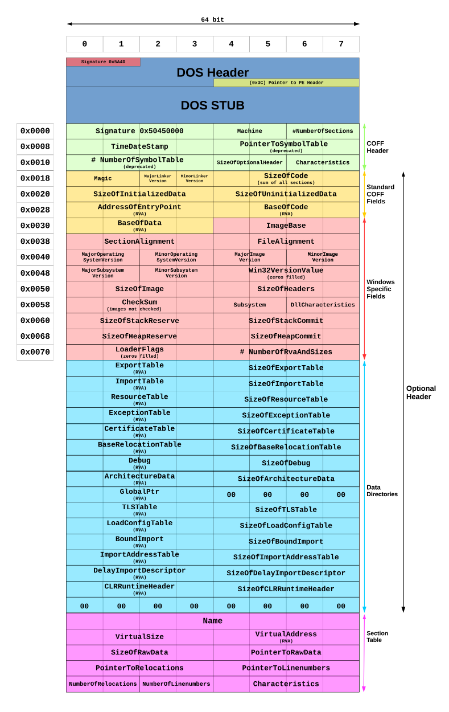

This is a short post demonstrating how you can determine the properties of a Windows executable by inspection of the Portable Executable (PE) header of the file using PowerShell. The example code shown below will identify the "bitness" of an executable (either 32 or 64 bit), and whether the program is a GUI or console based application.
function getExecutableProperties($path) {
$pointerOffset = 60
$machineTypeOffset = 4
$subsystemOffset = 92
$buffer = 4096
$bytes = new-object byte[]($buffer)
$stream = new-object system.io.filestream($path, [system.io.filemode]::open, [system.io.fileaccess]::read)
if (! ($stream.read($bytes, 0, $buffer) -and $bytes[0] -eq 0x4d -and $bytes[1] -eq 0x5a)) {
write-host 'Not PE image.'; exit
}
$headerOffset = [system.bitconverter]::touint32($bytes, $pointerOffset)
$machineType = [system.bitconverter]::touint16($bytes, $headerOffset + $machineTypeOffset)
$subsystem = [system.bitconverter]::touint16($bytes, $headerOffset + $subsystemOffset)
$stream.close()
$bitness = switch ($machineType) {
0x014c { 'x86' }
0x8664 { 'x64' }
default { 'Unknown' }
}
$mode = switch ($subsystem) {
2 { 'GUI' }
3 { 'Console' }
default { 'Unknown' }
}
return [pscustomobject]@{'Bitness' = $bitness; 'Mode' = $mode}
}Calling the function as shown below:
getExecutableProperties c:\windows\syswow64\notepad.exe
getExecutableProperties c:\windows\system32\reg.exeYields the following output:
Bitness Mode
------- ----
x86 GUI
x64 ConsoleI was able to determine the appropriate offsets by reviewing this graphic of the PE header (taken from the Portable Executable page on Wikipedia. And the relevant property values were determined from the PE Format page from Microsoft.
